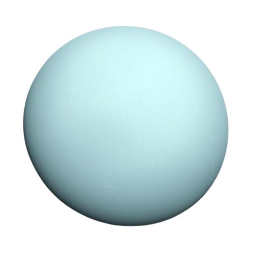

|  |
|
Urano está compuesto de agua, metano y amoniaco sobre un pequeño centro rocoso. Su atmósfera está hecha de hidrógeno y helio, como Júpiter y Saturno, pero además contiene metano. El metano es lo que le da a Urano el color azul. Urano también tiene anillos tenues. Los anillos internos son angostos y oscuros. Los anillos externos tienen colores vivos y son más fáciles de ver. Como Venus, Urano rota en dirección opuesta a la de la mayoría de los otros planetas. Y, a diferencia de cualquier otro planeta, Urano rota de lado. |